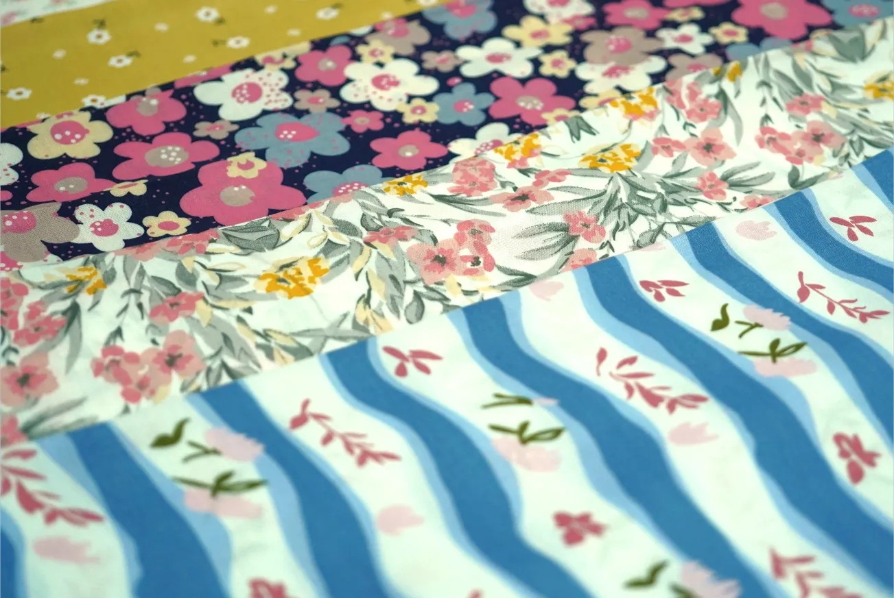

More Than Fabric: Products Made with Textile Printing
When people hear “textile printing,” they may first picture a piece of fabric with a particular pattern.
Printed fabric, however, can serve many purposes and be turned into a wide range of products.
At PT Kusuma Kencana Mulya, production spans a variety of textile products, from patterned fabric to finished goods such as sarongs, scarves, bed sheets, pillowcases and bolster covers, and tablecloths.
Fabric for Different Needs
Every product has different requirements.
Fabric for clothing calls for different considerations than fabric for sarongs, bed sheets, scarves, or other textile products.
These differences make material, pattern, color, and production-process selection important to creating a suitable product.
Patterns Give Products Character
A pattern is more than a visual element.
In textile products, a pattern can be part of a product's identity. Traditional batik, modern patterns, and custom designs can each give fabric a distinct character.
That is why pattern development is an important part of a fabric's journey.
Turning Needs into Products
A textile product does not always begin with its finished form.
Often, it starts with a need: what material is required, which pattern is suitable, how the colors should be applied, and what production process is needed.
Those considerations guide the fabric through production until it is ready for its intended use.
Every Product Has a Story
No single type of fabric suits every need.
Each product has its own character and process, so understanding the requirements from the start is essential when choosing materials and production methods.
For KKM, textile printing is about more than producing patterned fabric.
It is about bringing materials, design, color, and technology together to create a product that meets the intended need.